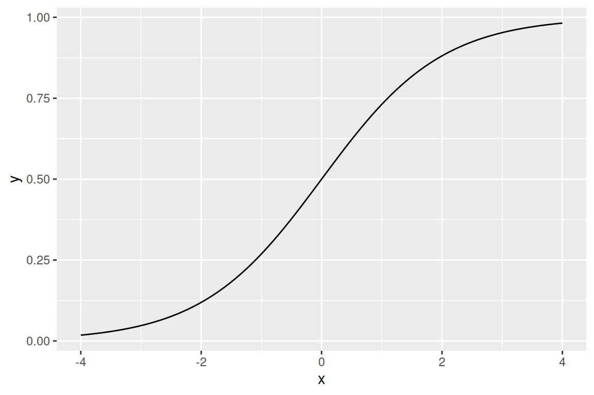

Loss functions for classification
\[ \def\losszo{\mathscr{L}_{\mathrm{ZO}}} \def\lossce{\mathscr{L}_{\mathrm{CE}}} \def\losssq{\mathscr{L}_{\mathrm{SQ}}} \]
Goals
- Introduce several different ways of representing classification as empirical risk minimization
- Zero–one loss
- Probability–based loss
- Margin loss
- Multi-category losses
- Introduce several ways of modeling classifiers
- Modeling decision rules (discriminiative methods)
- Modeling densities (generative methods)
Reading
Supplemental reading for this section is @isl:2021:gareth 4.1–4.4.
Loss functions
Let us now turn to classification problems. Like regression, we assume we get IID observations \(z_n = (\boldsymbol{x}_n, y_n)\), but now with the difference that \(y\) takes one of a set of unordered distinct values, which I will call \(\mathcal{Y}\). The simplest case is where \(y\) takes one of two values, which I will sometimes call “binary classification”.
As before, we wish to use \(\boldsymbol{x}\) to guess what \(y\) is. As we will see shortly, there are more choices to what \(f\) should even be for classification than there are for regression.
Encoding \(y\)
In principle, the values \(y\) takes are not numeric — a good running example to keep in mind is where \(\boldsymbol{x}\) are pixels in an image and \(y\in \{ \textrm{Dog}, \textrm{Cat} \}\). However, since we cannot use \(\textrm{Dog}\) and \(\textrm{Cat}\) in mathematical expressions, we often encode \(y\in \{0, 1 \}\) by arbitrarily identifying \(0\) with dogs and \(1\) with cats, or vice–versa.
A risk occurs if there are more than two classes and you choose a loss that doesn’t respect the fact that the numbers are arbitrary. For example, suppose \(y\in \{\textrm{Dog}, \textrm{Cat}, \textrm{Fish} \}\), which we encode respectively as \(y' \in \{ 0, 1, 2\}\). Suppose we then minimize the loss function \(\mathscr{L}(f, y) = (f- y')^2\). The problem with this numerical encoding is that the encoding imposes an ordering on the categories. For example, as \(f(\boldsymbol{x})\) increases from \(0\), you must make the fit better with both Cat and Fish, since both Cat and Fish are assigned numerical values that are greater than Dog. In this representation, it is impossible to move \(f\) in a way that makes Cat more likely but Fish less likely than Dog. The mapping from categories to numbers is arbitrary, and the loss function must respect that!
First version: the ML procedure returns a category
Ultimately, we need a mapping \(\boldsymbol{x}\mapsto \mathcal{Y}\), so we might take \(\hat{y}(\boldsymbol{x}) \in \mathcal{Y}\). Necessarily, the loss function must take in two values in \(\mathcal{Y}\) — the guess and the truth — and return a real number. Formally, \(\mathscr{L}: \mathcal{Y}\times\mathcal{Y}\mapsto \mathbb{R}^{}\), which can be fully represented as a \(|\mathcal{Y}|\times |\mathcal{Y}|\) matrix.
The simplest case of this is called “zero–one” loss:
\[ \losszo(\hat{y}, y) = \mathrm{I}\left(\hat{y}\ne y\right) = \sum_{c \in \mathcal{Y}} \mathrm{I}\left(\hat{y}= c\right) \mathrm{I}\left(y\ne c\right). \quad\textrm{(Zero--one loss)} \]
Of course, you can also weight different types of errors differently:
\[ \losszo(\hat{y}, y) = 0.1 \mathrm{I}\left(\hat{y}=0, y=1\right) + 0.9 \mathrm{I}\left(\hat{y}=1, y=0\right). \]
Classification error losses based on counting the mismatches are conceptually appealing, but practically difficult, since they are discontinuous — small changes in your algorithm or information about \(\boldsymbol{x}\) can produce discrete changes. For this reason, we often perform empirical risk minimization on one of the more expressive losses below, and then argue using VC dimension that the zero–one loss has low generalization error.
Note that the maximizer of the zero–one loss has a closed form:
\[ \begin{aligned} \mathbb{E}_{\mathbb{P}_{\,}\left(\boldsymbol{x}, y\right)}\left[\losszo(\hat{y}, y)\right] ={}& \sum_{c \in \mathcal{Y}} \mathrm{I}\left(\hat{y}= c\right) \mathbb{E}_{\mathbb{P}_{\,}\left(\boldsymbol{x}, y\right)}\left[\mathrm{I}\left(y\ne c\right)\right] \\={}& \sum_{c \in \mathcal{Y}} \mathrm{I}\left(\hat{y}= c\right) ( 1 - \mathbb{P}_{\,}\left(y= c, \boldsymbol{x}\right)) \\={}& 1 - \sum_{c \in \mathcal{Y}} \mathrm{I}\left(\hat{y}= c\right) \mathbb{P}_{\,}\left(y= c | \boldsymbol{x}\right) \mathbb{P}_{\,}\left(\boldsymbol{x}\right). \end{aligned} \]
Sice \(\mathbb{P}_{\,}\left(\boldsymbol{x}\right)\) does not depend on \(c\), the best choice for \(\hat{y}\) is
\[ \hat{y}^*(\boldsymbol{x}) = \underset{c \in \mathcal{Y}}{\mathrm{argmax}}\, \mathbb{P}_{\,}\left(y= c | \boldsymbol{x}\right). \]
This makes perfect sense — if we could compute \(\mathbb{P}_{\,}\left(y= c | \boldsymbol{x}\right)\) for each category, we would choose the category with the highest probability. The problem is that we don’t know \(\mathbb{P}_{\,}\left(y= c | \boldsymbol{x}\right)\). How can we model it?
Second version: the ML procedure returns a probability
The natural generalization of zero–one loss and functions that return categories is a function that returns a probability. For binary regression with \(y\in \left\{ 0,1 \right\}\), we can take \(\pi(\boldsymbol{x})\) to approximate \(\mathbb{P}_{\,}\left(y= 1 \vert \boldsymbol{x}\right)\), and so take \(\pi: \boldsymbol{x}\mapsto [0,1]\). Our loss can then punish \(\pi\) that is low when \(y= 1\) or high when \(y= 0\). Ultimately we need a category, and we can return \(\hat{y}\) to be the category with highest estimated probability. The benefit of doing so is a more tractable and flexible empirical risk; the cost is not directly minimizing the thing we actually care about, which is typically more like zero–one loss.
One way to minimize a loss as a function of probability is actually squared error:
\[ \losssq(\pi, y) = (\pi(\boldsymbol{x}) - y)^2 \quad\textrm{(Squared error loss)}. \]
Using our regression results, we have in fact already shown that the minimizer of \(\mathscr{L}(\pi)\) is \(\pi^* = \mathbb{E}_{\vphantom{}}\left[y\vert \boldsymbol{x}\right] = \mathbb{P}_{\,}\left(y\vert \boldsymbol{x}\right)\)!
Unfortunately, unlike linear regression, one probably does not want to model \(\pi(\boldsymbol{x}| \boldsymbol{\beta}) = \boldsymbol{\beta}^\intercal\boldsymbol{x}\), since these values are not constrained to be in \([0,1]\). We will deal with this in the next section.
If \(\pi(\boldsymbol{x}) \in (0,1)\) then we can in fact use other losses. One common choice is the negative log likelihood:
\[ \begin{aligned} \lossce(\pi, y) ={}& - \log \mathbb{P}_{\,}\left(y\vert \pi\right) \\ ={}& - \log \pi^y(1-\pi)^{1 - y} \\ ={}& - y\log \pi - (1 - y) \log (1-\pi) \\ ={}& - y\log \frac{\pi}{1 - \pi} - \log (1-\pi). \end{aligned} \]
This is also known as the “cross–entropy loss,” since the maximum likelihood estimator is also the minimizer of the Kullback–Liebler divergence. (See the 254 homework problem for unit 2.)
One can show that
\[ \pi^* = \underset{\pi}{\mathrm{argmax}}\, \mathbb{E}_{\mathbb{P}_{\,}\left(y\right)}\left[\lossce(\pi, y)\right] = \mathbb{P}_{\,}\left(y= 1\right). \]
If we allow \(\pi(\boldsymbol{x})\) to depend on \(\boldsymbol{x}\) so that we are optimizing over functions rather than a scalars, the loss is
\[ \begin{aligned} \lossce(\pi) ={}& \mathbb{E}_{\mathbb{P}_{\,}\left(\boldsymbol{x}, y\right)}\left[\lossce(\pi(\boldsymbol{x}), y)\right] \\={}& \mathbb{E}_{\mathbb{P}_{\,}\left(\boldsymbol{x}\right)}\left[ \mathbb{E}_{\mathbb{P}_{\,}\left(y| \boldsymbol{x}\right)}\left[ - \log \mathbb{P}_{\,}\left(y\vert \pi(\boldsymbol{x})\right) \right] \right]. \end{aligned} \]
Since, for each \(\boldsymbol{x}\), \(\mathbb{E}_{\mathbb{P}_{\,}\left(y| \boldsymbol{x}\right)}\left[- \log \mathbb{P}_{\,}\left(y\vert \pi(\boldsymbol{x})\right)\right]\) is maximized by \(\mathbb{P}_{\,}\left(y= 1 | \boldsymbol{x}\right)\), the expectation of \(\boldsymbol{x}\) is also maximized at \(\pi^*(\boldsymbol{x}) = \mathbb{P}_{\,}\left(y= 1 | \boldsymbol{x}\right)\). We thus see that the cross-entropy loss and squared loss have the same minimizer, though each will deal with misspecification differently.
In fact, there are an infinite set of loss functions that all have \(\mathbb{P}_{\,}\left(y= 1 | \boldsymbol{x}\right)\) as their minimum. They are called ``proper scoring rules.’’ Each such loss can be derived from a any convex function defined on the vector \(\pi\), and vice–versa. (See Gneiting and Raftrey 2007).
Each of these can be generalized to multi–category losses by taking \(\pi_c\) to be the probability of category \(c\) and
\[ \mathscr{L}(\pi, y) = \sum_{c \in \mathcal{Y}} \mathrm{I}\left(y= c\right) \mathscr{L}(\pi_c), \]
where we can take \(\mathscr{L}(\pi_c) = (1 - \pi_c)^2\) for squared loss or \(\mathscr{L}(\pi_c) = \log \pi_c\) for cross–entropy loss. Of course, you must choose \(\pi_c\) so that \(\sum_{c \in \mathcal{Y}} \pi_c = 1\), and check that you recover the above losses in the binary case.
We can naturally turn a probability estimate into a classifier by taking
\[ \hat{y}= \underset{c \in \mathcal{Y}}{\mathrm{argmax}}\, \pi_c. \]
Third version: Unconstraining parameterizations for probabilities
The problem with the preceding approach is that we have a whole host of tools from regression for flexibily returning functions in \(\mathbb{R}^{}\) which we would like to deploy to estimate probabilities. The trick to using these functions is to differentiably transform the real line into a probability. A classic example is the expit function (which is confusingly also known as the “logistic function”).
Supose we have \(f\in \mathbb{R}^{}\). Then
\[ \pi(f) = \frac{\exp(f)}{1 + \exp(f)} =: \mathrm{Expit}\left(f\right). \]
You can readily see that \(\mathrm{Expit}\left(f\right) \in (0,1)\). (Note that you cannot represent zero or one probabilities with the expit function.) It looks like this:
The expit function is invertible with inverse sometimes called the “logit:”
\[ \mathrm{Logit}\left(\pi\right) := \log \frac{\pi}{1 - \pi}. \]
You can readily see that the logit function maps \((0,1)\) into the real line and is the inverse of the expit function. Note that if you plug this formula into the cross-entropy loss,
\[ \begin{aligned} \lossce(\mathrm{Expit}\left(f\right), y) ={}& \\ ={}& - y\mathrm{Logit}\left(\mathrm{Expit}\left(f\right)\right) + \log (1-\mathrm{Expit}\left(f\right)) \\={}& - yf+ \log (1- \frac{\exp(f)}{1 + \exp(f)}) \\={}& - yf- \log (1 + \exp(f)), \end{aligned} \]
And if we further take \(f(\boldsymbol{x}) = \boldsymbol{\beta}^\intercal\boldsymbol{x}\), we get
\[ \begin{aligned} \lossce(\mathrm{Expit}\left(\boldsymbol{\beta}^\intercal\boldsymbol{x}\right), y) ={}& - y\boldsymbol{\beta}^\intercal\boldsymbol{x}- \log (1 + \exp(\boldsymbol{\beta}^\intercal\boldsymbol{x})), \end{aligned} \]
which is logistic regression.
The fact that the cross-entropy loss is linear in \(f\) when using the expit function is the key reason to use the expit function rather than other differmorphisms from \(\mathbb{R}^{\mapsto }(0,1)\).
In general, if we learn different functions \(f_c\) for each of the \(|\mathcal{Y}|\) categories, we can write
\[ \pi_c(f) = \frac{\mathrm{Expit}\left(f_c\right)}{\sum_{c' \in \mathcal{Y}} \mathrm{Expit}\left(f_{c'}\right)}. \]
Since we can multiply top and bottom of the preceding expression by \(\exp(-f_1)\), giving
\[ \pi_c(f) = \frac{\mathrm{Expit}\left(f_c - f_1\right)}{\sum_{c' \in \mathcal{Y}} \mathrm{Expit}\left(f_{c'} - f_1\right)}, \]
we see that the probability only depends on the contrasts between the functions. For this reason, it is typical to fix one of the categories at a reference value \(f_1 = 0\). This recovers the fact that for binary regression we need to specify only a single function \(f\) rather than a function for each outcome.
Fourth version: The ML procedure returns a threshold (“Discriminative modeling”)
Suppose we have some monotonic increasing unconstraining parameterization \(\phi: \mathbb{R}^{} \mapsto (0,1)\), such as the expit function. Suppose we model each category’s unconstrained probability as \(f_c\). Recall that we return the category
\[ \hat{y}(\boldsymbol{x}) = \underset{\pi_c}{\mathrm{argmax}}\, \phi(f_c(\boldsymbol{x})) = \underset{\pi_c}{\mathrm{argmax}}\, f_c(\boldsymbol{x}), \]
where the final line uses the fact that \(\phi\) is monotonic and \(\sum_{c' \in \mathcal{Y}} \mathrm{Expit}\left(f_{c'}\right)\) does not depend on \(c\).
Thus another interpretation of \(f\) that avoids probabilities altogether is as a thresholding function. In binary classification, taking zero as the reference class, we return
\[ \hat{y}(\boldsymbol{x}) = \begin{cases} 1 & \textrm{ if }f(\boldsymbol{x}) \ge 0 \\ 0 & \textrm{ if }f(\boldsymbol{x}) < 0, \end{cases} \]
since \(f(\boldsymbol{x}) \ge 0\) if and only if the corresponding \(\pi_1(\boldsymbol{x}) > 0.5\).
In other words, \(f\) is simply a decision boundary. Interestingly, recall that we began by trying to estimate \(\mathbb{P}_{\,}\left(y= c | \boldsymbol{x}\right)\); superficially a decision boundary seems to have nothing to do with such a probability. But given any monotonic unconstraining function \(\phi\), a decision boundary \(f_c\) is consistent with the implicit model
\[ \hat\pi(y= c | \boldsymbol{x}) = \frac{\phi(f_c(\boldsymbol{x}))}{\sum_{c' \in \mathcal{Y}} \phi(f_{c'}(\boldsymbol{x}))}. \]
This is true for any \(\phi\), and so a decision boundary is, in general, consistent with many different probability estimates \(\hat\pi(y= c | \boldsymbol{x})\). Conversely, a complete set of probability estimates are consistent with a wide variety of decision boundaries, all of which lead to identical classifications.
Perceptron algorithm
A classical example of the threshold perspective is given by the perceptron algorithm, and by support vector classifiers. These classical tools are motivated by finding a decision boundary, and not by modeling a probability.
This short section derive from these more detailed notes, which are optional at this point. Suppose we have regressors, \(\boldsymbol{x}_n\), all satisfying \(\left\Vert\boldsymbol{x}_n\right\Vert_2^2 = 1\) (this is for notational convenience and can be relaxed). Let \(y_n \in \{-1, 1\}\) — note the departure from our usual notation, in which the negative cases were \(0\) rather than \(-1\). For a given \(\boldsymbol{\beta}\), we classify observation \(n\) as
\[ \hat{y}_n = \mathrm{Sign}\left( \boldsymbol{x}_n^\intercal\boldsymbol{\beta}\right). \]
That is, we look at the degree of alignment between \(\boldsymbol{x}_n\) and \(\boldsymbol{\beta}\) to determine the class of \(\hat{y}_n\). Note that this is the same as the decision rule in any classifier based on transformed linear regression.
The perceptron algorithm is as follows:
- Set \(\boldsymbol{\beta}=0\).
- Loop indefinitely:
- Draw \(n\in\{1,\dots,N\}\) at random.
- If \(y_n\boldsymbol{x}_n^T\boldsymbol{\beta}< 1\), set \(\boldsymbol{\beta}\leftarrow \boldsymbol{\beta}+ y_n\boldsymbol{x}_n\).
Remarkably, this simple algorithm produces an effective classifier if there is a unit vector \(\boldsymbol{\beta}^{*}\) which separates the data with margin \(\gamma\): \[ y_n\boldsymbol{x}_n^T\boldsymbol{\beta}^{*}> \gamma>0 \text{ for all } n=1,\dots,N \textrm{ and }\left\Vert\boldsymbol{\beta}^{*}\right\Vert_2^2 = 1. \]
Under these conditions, remarkably, we have that the algorithm makes at most \(3 / \gamma^2\) margin mistakes during training.
Fifth version: The ML procedure returns a density estimate of \(\boldsymbol{x}\) (“Generative modeling”)
Finally, we will discuss a quite different approach to classification called the “generative modeling” approach. We have noted that the optimal classifier takes the form of the maximum of \(\mathbb{P}_{\,}\left(y= c | \boldsymbol{x}\right) \mathbb{P}_{\,}\left(\boldsymbol{x}\right)\). In our reasoning above we ignored \(\mathbb{P}_{\,}\left(\boldsymbol{x}\right)\) since it does not depend on \(c\), and modeled \(\mathbb{P}_{\,}\left(y= c | \boldsymbol{x}\right)\), e.g. using the expit function and linear models.
However, we could condition in the other direction to write
\[ \hat{y}= \underset{c}{\mathrm{argmax}}\, \mathbb{P}_{\,}\left(y= c | \boldsymbol{x}\right) \mathbb{P}_{\,}\left(\boldsymbol{x}\right) = \underset{c}{\mathrm{argmax}}\, \mathbb{P}_{\,}\left(\boldsymbol{x}| y= c\right) \mathbb{P}_{\,}\left(y= c\right). \]
When we have many more data than categories, \(\mathbb{P}_{\,}\left(y= c\right)\) is easy to estimate:
\[ \mathbb{P}_{\,}\left(y= c\right) \approx \frac{1}{N} \sum_{n=1}^N\mathrm{I}\left(y_n = c\right). \]
We can then attempt to model the conditional density \(\mathbb{P}_{\,}\left(\boldsymbol{x}| y= c\right)\) by forming density estimates the sets of points \(\mathcal{X}_c := \left\{ x_n: y_n = c \right\}\). Density estimation is difficult in high dimensions — arguably more difficult than estimating good decision boundaries — but generative modeling can be particularly effective in low dimensions, or when something special is known about the structure of \(\mathbb{P}_{\,}\left(\boldsymbol{x}| y= c\right)\).
Note that the estimation \(\mathbb{P}_{\,}\left(\boldsymbol{x}| y= c\right)\) does not admit a ready formulation as a direct minimization of classification error. Estimation of densities is typically considered an “unsupervised learning” problem for this reason, even though here we would use the unsupervised learning estimate in service of a supervised learning problem.
A simple approximation to \(\mathbb{P}_{\,}\left(\boldsymbol{x}| y= c\right)\) leads to the “naive Bayes” classifier: we simply model the components of \(\boldsymbol{x}\) as independent, and estimate each component separately using histograms or kernel density estimators. See section 6.6.3 of @esl:2009:hastie.
In your homework, you will show that making a certain Gaussian assumption on \(\mathbb{P}_{\,}\left(\boldsymbol{x}| y= c\right)\) leads to logistic–regression like linear classification boundaries.